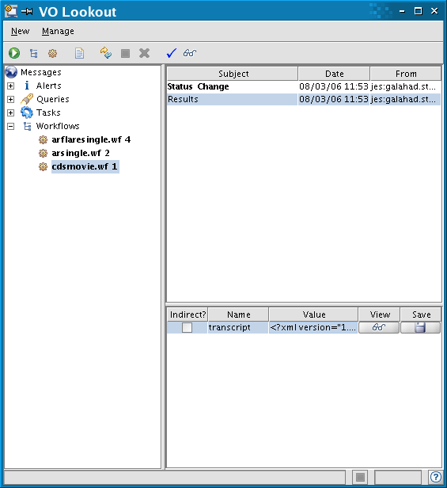

Lookout
Summary
Lookout monitors the progress of jobs running on the AstroGrid system and allows to display the results.
1. Background
Whenever you execute an Application (see Application Launcher) or Workflow (see Workflow Builder) on the AstroGrid system, a Lookout window opens for you to monitor their progress.
2. Monitoring job progress
If you used the Application Launcher to submit and query to a data centre, click the '+' next to Queries to display a list of your queries. Similarly if you submitted a tool using the Application Launcher click the '+' next to Tasks and if you submitted a Workflow, click the '+' next to Workflows. Clicking on one of the names in any of the lists displays in the right hand side panel the information on the job execution.
Lookout will automatically refresh, but you can also refresh manually by clicking on the refresh icon. To delete a transcript from the list, highlight it and choose the Delete icon).
3. Viewing a job transcript and results
If the job completed successfully, the last entry under Subject will be Results. Click on this entry and the results will be listed in the bottom right panel of the window.
If you submitted a Query and did not require the output to be saved into a file on your Local Disk or MySpace, you can visualise the table of results of your query, by clicking on the glasses icon under View. If you submitted a Query and did require the output to be saved into a file, go to MySpace or your local disk to view the votable.
If you submitted a Workflow, by clicking on the glasses icon under View, you will see a transcript of the execution of your workflow. You can save the transcript and reload it later by choosing 'Load a Workflow or Transcript'.

Author: Silvia Dalla, s.dalla@manchester.ac.uk
Last revised : 14 March 2006